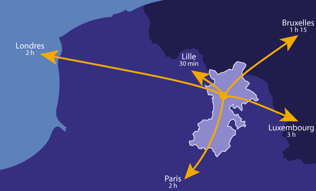

Situation Géographique
Découvrez notre emplacement géographique.
À une heure de Bruxelles et deux heures de Paris et du littoral, La Porte du Hainaut connaît aussi une activité festive haute en couleurs, dans le respect des traditions mais avec toujours l'envie d'inventer. La Porte du Hainaut est une communauté d'agglomération réunissant 47 communes au cœur de la région Hauts-de-France. Situé non loin de la Belgique, c'est un territoire dynamique, bénéficiant d'une réelle attractivité et d'un développement économique en essor constant.
Ses communes offrent une vraie diversité de paysages, comme en témoignent son appartenance au Parc Naturel Régional Scarpe-Escaut, ses ressources en eau, que ce soient celles aux vertus bienfaisantes des thermes de Saint-Amand-les-Eaux ou celles des nombreuses voies d'eau qui la traversent, telles que la Scarpe ou encore l'Escaut. Sa richesse c'est aussi un patrimoine culturel, des bâtiments à l'architecture héritée de l'ère industrielle, une gastronomie qui s'appuie sur des produits du terroir renommés et des activités à faire en groupe ou en famille. Sans oublier le nouveau site entièrement dédié à l'image, Arenberg Creative Mine.